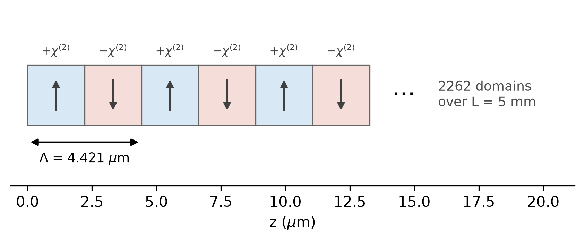
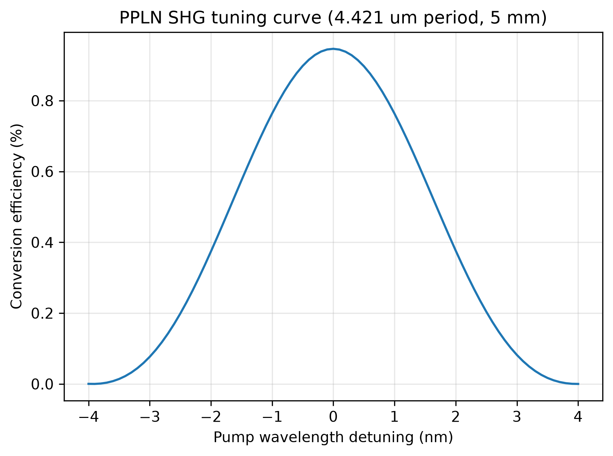
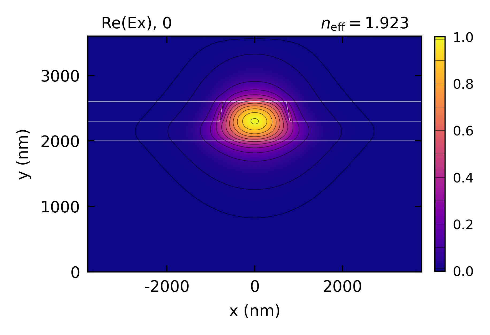

Nonlinear-EME: PPLN
Highlighted features: poling_period for quasi-phase matching, x-cut lithium niobate with TE modes using \(d_{33}\), roughness_rms for propagation loss, and chi2_spectrum for the tuning curve.
This code example is licensed under the BSD 3-Clause License.
import sys
import emodeconnection as emc
import numpy as np
from matplotlib import pyplot as plt
## Periodically poled thin-film lithium niobate: a 1550 nm pump doubled to 775 nm.
## x-cut puts the optic axis in-plane, so the TE modes use d33, the largest
## coefficient. Geometry from Ge et al., Photonics 11, 891 (2024).
## Set simulation parameters
pump_wavelength = 1550.0 # [nm]
signal_wavelength = pump_wavelength / 2 # [nm] second harmonic
dx, dy = 20, 20 # [nm] resolution
w_core = 1600 # [nm] ridge top width
h_film, h_ridge = 600, 300 # [nm] LN film thickness and etch depth
h_box, h_clad = 2000, 1000 # [nm] SiO2 below and above
length = 5e6 # [nm] 5 mm
pump_power = 1e-3 # [W]
## Etched walls are sloped and rougher than the as-grown surfaces.
## sidewall_angle is from vertical; the roughness pairs are [sidewall, top/bottom].
sidewall_angle = 15 # [deg] from vertical
roughness_rms = [2.0, 0.25] # [nm] rms, [sidewall, top/bottom]
correlation_length = [50.0, 80.0] # [nm], [sidewall, top/bottom]
window_width = w_core + 2 * 3000
window_height = h_box + h_film + h_clad
## theta = pi/2 puts the optic axis along simulation x: x-cut.
ln_x_cut = emc.MaterialSpec(material='LN_MgO', theta=np.pi / 2)
em = emc.EMode(emode_cmd=sys.argv[1:], simulation_name='ppln', verbose=True)
def build_ppln_profile(wavelength, num_modes, name):
"""One TE profile of the poled ridge at a given wavelength."""
em.settings(
wavelength=wavelength,
x_resolution=dx,
y_resolution=dy,
window_width=window_width,
window_height=window_height,
num_modes=num_modes,
boundary_condition='TE',
background_material='SiO2',
generate_chi2=True,
)
em.shape(name='BOX', material='SiO2', height=h_box)
em.shape(
name='LN',
material=ln_x_cut,
fill_material='SiO2',
height=h_film,
mask=w_core,
etch_depth=h_ridge,
sidewall_angle=sidewall_angle,
roughness_rms=roughness_rms,
correlation_length=correlation_length,
)
em.shape(name='clad', material='SiO2', height=h_clad)
## label_profile() meshes but does not solve; the poling period needs n_eff.
em.FDM()
em.label_profile(name=name)
build_ppln_profile(pump_wavelength, 2, 'pump')
## create_profile_set() consumes its profiles; keep a copy to plot at the end.
em.label_profile(name='pump_mode')
build_ppln_profile(signal_wavelength, 4, 'sh')
def fundamental_te(profile):
"""Highest-index genuinely TE mode.
Eigenvalue order is not polarization order: at the second harmonic a TM mode
sits at index 0 even under a TE boundary condition, and pairing it with the
TE pump costs about 2000x in conversion. Pick on TE fraction, not on index.
"""
n_eff = np.real(np.asarray(em.get('effective_index', profile=profile)))
te = np.asarray(em.get('TE_fraction', profile=profile))
index = next(i for i in range(len(n_eff)) if te[i] > 0.5)
return index, n_eff[index], te[index]
## Read the profiles before create_profile_set() consumes them.
i_pump, n_pump, te_pump = fundamental_te('pump')
i_sh, n_sh, te_sh = fundamental_te('sh')
print(f'pump: mode {i_pump}, n_eff {n_pump:.5f}, TE {te_pump * 100:.1f} %')
print(f'second harmonic: mode {i_sh}, n_eff {n_sh:.5f}, TE {te_sh * 100:.1f} %')
## Roughness-limited propagation loss of each field
for label, profile, index in (('pump', 'pump', i_pump), ('second harmonic', 'sh', i_sh)):
em.scattering(profile=profile, shape='LN')
loss = np.asarray(em.get('scattering_loss', profile=profile))
print(f'{label} scattering loss: {loss[index] / 100:.4f} dB/cm')
em.create_profile_set(profiles=['pump', 'sh'], profile_set_name='ppln')
em.report()
## Quasi-phase matching sets the period by the grating: Lambda = 2*pi/Delta_beta.
beta_pump = 2 * np.pi * n_pump / (pump_wavelength * 1e-9)
beta_sh = 2 * np.pi * n_sh / (signal_wavelength * 1e-9)
poling_period = 2 * np.pi / (beta_sh - 2 * beta_pump) * 1e9 # [nm]
print(f'poling period: {poling_period * 1e-3:.4f} um')
em.straight_section(
name='ppln_section',
profile='ppln',
length=length,
nonlinear=emc.SHGProcess(pump_wavelength=pump_wavelength, poling_period=poling_period),
)
em.settings(excitation=emc.Source(port='left', wavelength=pump_wavelength, power=pump_power))
em.EME()
r = em.get('response')
conversion = r.power('right', signal_wavelength) / pump_power
print(
f'conversion at {pump_power * 1e3:.0f} mW over {length * 1e-6:.0f} mm: {conversion * 100:.6f} %'
)
print(
f'normalized efficiency: {conversion / (pump_power * (length * 1e-7) ** 2) * 100:.1f} %/W/cm^2'
)
## Tuning curve; the acceptance bandwidth is set by the device length.
scan = em.chi2_spectrum(values=pump_wavelength + np.linspace(-4.0, 4.0, 81), tolerance=2e-3)
detuning = scan['values'] - pump_wavelength
print(f'tuning curve: {len(scan["solved_wavelengths"])} solves for {len(detuning)} wavelengths')
plt.figure(figsize=(6, 4.5))
plt.plot(detuning, np.array(scan['conversion']) * 100)
plt.xlabel('Pump wavelength detuning (nm)')
plt.ylabel('Conversion efficiency (%)')
plt.title(f'PPLN SHG tuning curve ({poling_period * 1e-3:.3f} um period, {length * 1e-6:.0f} mm)')
plt.grid(True, alpha=0.3)
plt.tight_layout()
plt.savefig('ppln_tuning_curve.png', dpi=300, bbox_inches='tight')
## Poling schematic: alternating domains of period Lambda along the guide. The
## device holds about 1500 of them, so draw the first few and mark the rest.
n_draw = 6 # domains to draw, i.e. n_draw/2 periods
n_domains = round(2 * length / poling_period)
half = poling_period / 2 * 1e-3 # [um] one domain
fig, ax = plt.subplots(figsize=(7, 2.2))
for k in range(n_draw):
sign = 1 if k % 2 == 0 else -1
ax.add_patch(
plt.Rectangle((k * half, -0.5), half, 1.0,
facecolor='#d9e8f5' if sign > 0 else '#f5ddd9', edgecolor='0.4', lw=0.8)
)
ax.annotate('', xy=(k * half + half / 2, 0.30 * sign), xytext=(k * half + half / 2, -0.30 * sign),
arrowprops=dict(arrowstyle='-|>', color='0.25', lw=1.2))
ax.text(k * half + half / 2, 0.62, r'$+\chi^{(2)}$' if sign > 0 else r'$-\chi^{(2)}$',
ha='center', va='bottom', fontsize=8, color='0.25')
## One period spans two domains
ax.annotate('', xy=(0, -0.78), xytext=(2 * half, -0.78),
arrowprops=dict(arrowstyle='<|-|>', color='k', lw=1.1))
ax.text(half, -0.95, rf'$\Lambda$ = {poling_period * 1e-3:.3f} $\mu$m',
ha='center', va='top', fontsize=9)
## The rest of the device. A full-width arrow for L would read as though 5 mm
## spanned the ~12 um drawn here.
x_end = n_draw * half
ax.text(x_end + half * 0.6, 0.0, r'$\cdots$', ha='center', va='center', fontsize=16)
ax.text(x_end + half * 1.2, 0.0,
f'{n_domains} domains\nover L = {length * 1e-6:.0f} mm',
ha='left', va='center', fontsize=9, color='0.3')
ax.set_xlim(-half * 0.3, x_end + half * 3.6)
ax.set_ylim(-1.5, 1.4)
ax.set_xlabel(r'z ($\mu$m)')
ax.set_yticks([])
for side in ('left', 'right', 'top'):
ax.spines[side].set_visible(False)
fig.savefig('ppln_poling.png', dpi=300, bbox_inches='tight')
em.plot(component='Ex', plot_function='abs', profile='pump_mode')
## Close EMode
em.close()
Console output:
EMode3D 1.0.4 - email
Meshing completed in 1.7 sec
Solving modes completed in 2.8 sec
Meshing completed in 1.7 sec
Solving modes completed in 3.3 sec
Wavelength: 775.0 nm
Mode # n_eff TE % Loss (dB/m)
-------- -------- ------ -------------
TM-0 2.135012 0.2 % 0.000
TE-1 2.098004 99.9 % 0.000
TE-2 2.021610 67.0 % 0.000
TM-3 2.013287 33.1 % 0.000
Solving S-matrices...
Solving section: ppln_section... completed in 0.4 sec
completed in 0.4 sec
Scanning ppln_section over 1546-1554 nm... completed in 5 min 26.6 sec
Exited EMode
pump: mode 0, n_eff 1.92271, TE 99.7 %
second harmonic: mode 1, n_eff 2.09800, TE 99.9 %
pump scattering loss: 0.0421 dB/cm
second harmonic scattering loss: 0.1048 dB/cm
poling period: 4.4212 um
conversion at 1 mW over 5 mm: 0.946378 %
normalized efficiency: 3785.5 %/W/cm^2
tuning curve: 5 solves for 81 wavelengths
Figures:


